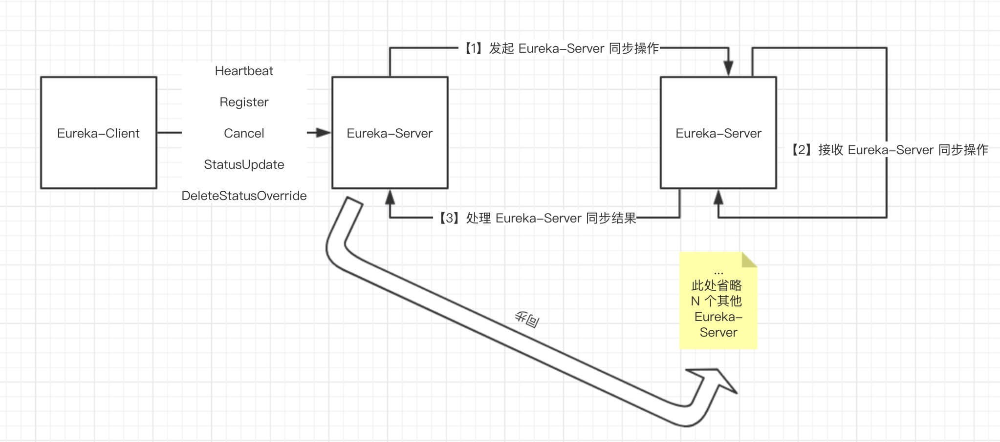
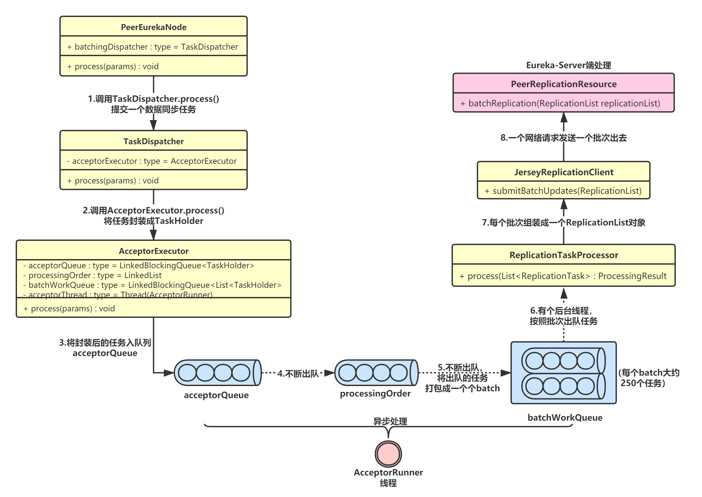

Eureka-Server 集群是不区分主从节点的，所有节点都是对等的。当Eureka-Client 向任意Eureka-Server发起注册、下线等请求时，Eureka-Server 会将操作复制到集群中其它的 Eureka-Server， 以实现数据的最终一致性。
Eureka-Server集群同步的整体流程如下：
PeerEurekaNode，PeerEurekaNode就代表了一个Eureka-Server；首先，Eureka-Server 在初始化时，调用 EurekaBootStrap.getPeerEurekaNodes(...) 方法，创建 PeerEurekaNodes：
public class PeerEurekaNodes {
// 应用实例注册表
protected final PeerAwareInstanceRegistry registry;
// Eureka-Server 配置
protected final EurekaServerConfig serverConfig;
// Eureka-Client 配置
protected final EurekaClientConfig clientConfig;
// Eureka-Server 编解码
protected final ServerCodecs serverCodecs;
// 应用实例信息管理器
private final ApplicationInfoManager applicationInfoManager;
// Eureka-Server 集群节点数组
private volatile List<PeerEurekaNode> peerEurekaNodes = Collections.emptyList();
// Eureka-Server 服务地址数组
private volatile Set<String> peerEurekaNodeUrls = Collections.emptySet();
// 定时任务服务
private ScheduledExecutorService taskExecutor;
@Inject
public PeerEurekaNodes(
PeerAwareInstanceRegistry registry,
EurekaServerConfig serverConfig,
EurekaClientConfig clientConfig,
ServerCodecs serverCodecs,
ApplicationInfoManager applicationInfoManager) {
this.registry = registry;
this.serverConfig = serverConfig;
this.clientConfig = clientConfig;
this.serverCodecs = serverCodecs;
this.applicationInfoManager = applicationInfoManager;
}
}
接着Eureka-Server启动过程中会调用 PeerEurekaNodes.start() 方法，主要完成两个逻辑：
// PeerEurekaNodes.java
public void start() {
// 创建定时任务执行线程池
taskExecutor = Executors.newSingleThreadScheduledExecutor(
new ThreadFactory() {
@Override
public Thread newThread(Runnable r) {
Thread thread = new Thread(r, "Eureka-PeerNodesUpdater");
thread.setDaemon(true);
return thread;
}
}
);
try {
// 初始化集群节点信息
updatePeerEurekaNodes(resolvePeerUrls());
// 创建任务
Runnable peersUpdateTask = new Runnable() {
@Override
public void run() {
try {
updatePeerEurekaNodes(resolvePeerUrls());
} catch (Throwable e) {
logger.error("Cannot update the replica Nodes", e);
}
}
};
// 启动定时任务
taskExecutor.scheduleWithFixedDelay(
peersUpdateTask,
serverConfig.getPeerEurekaNodesUpdateIntervalMs(),
serverConfig.getPeerEurekaNodesUpdateIntervalMs(),
TimeUnit.MILLISECONDS
);
} catch (Exception e) {
throw new IllegalStateException(e);
}
//...
}
protected List<String> resolvePeerUrls() {
// 获得 Eureka-Server 集群服务地址数组
InstanceInfo myInfo = applicationInfoManager.getInfo();
String zone = InstanceInfo.getZone(clientConfig.getAvailabilityZones(clientConfig.getRegion()), myInfo);
List<String> replicaUrls = EndpointUtils
.getDiscoveryServiceUrls(clientConfig, zone, new EndpointUtils.InstanceInfoBasedUrlRandomizer(myInfo));
// 移除自己（避免向自己同步）
int idx = 0;
while (idx < replicaUrls.size()) {
if (isThisMyUrl(replicaUrls.get(idx))) {
replicaUrls.remove(idx);
} else {
idx++;
}
}
return replicaUrls;
}
上述流程中，更新集群节点信息是调用了PeerEurekaNodes.updatePeerEurekaNodes()方法，实现代码如下：
// PeerEurekaNodes.java
protected void updatePeerEurekaNodes(List<String> newPeerUrls) {
if (newPeerUrls.isEmpty()) {
logger.warn("The replica size seems to be empty. Check the route 53 DNS Registry");
return;
}
// 添加新增的集群节点
Set<String> toShutdown = new HashSet<>(peerEurekaNodeUrls);
toShutdown.removeAll(newPeerUrls);
Set<String> toAdd = new HashSet<>(newPeerUrls);
toAdd.removeAll(peerEurekaNodeUrls);
if (toShutdown.isEmpty() && toAdd.isEmpty()) { // No change
return;
}
// 关闭删除的集群节点
List<PeerEurekaNode> newNodeList = new ArrayList<>(peerEurekaNodes);
if (!toShutdown.isEmpty()) {
logger.info("Removing no longer available peer nodes {}", toShutdown);
int i = 0;
while (i < newNodeList.size()) {
PeerEurekaNode eurekaNode = newNodeList.get(i);
if (toShutdown.contains(eurekaNode.getServiceUrl())) {
newNodeList.remove(i);
eurekaNode.shutDown();
} else {
i++;
}
}
}
// 添加新增的集群节点
if (!toAdd.isEmpty()) {
logger.info("Adding new peer nodes {}", toAdd);
for (String peerUrl : toAdd) {
newNodeList.add(createPeerEurekaNode(peerUrl));
}
}
// 重新赋值
this.peerEurekaNodes = newNodeList;
this.peerEurekaNodeUrls = new HashSet<>(newPeerUrls);
}
添加新增集群节点，是调用了 PeerEurekaNodes.createPeerEurekaNode(peerUrl) 方法，代码如下：
protected PeerEurekaNode createPeerEurekaNode(String peerEurekaNodeUrl) {
// 创建 Eureka-Server 集群通信客户端
HttpReplicationClient replicationClient = JerseyReplicationClient.createReplicationClient(serverConfig, serverCodecs, peerEurekaNodeUrl);
String targetHost = hostFromUrl(peerEurekaNodeUrl);
if (targetHost == null) {
targetHost = "host";
}
// 创建 PeerEurekaNode
return new PeerEurekaNode(registry, targetHost, peerEurekaNodeUrl, replicationClient, serverConfig);
}
Eureka-Server 启动时，会调用 PeerAwareInstanceRegistryImpl#syncUp() 方法，从集群中的任意一个 Eureka-Server 节点获取初始注册表信息，代码如下：
// PeerAwareInstanceRegistryImpl.java
public int syncUp() {
// Copy entire entry from neighboring DS node
int count = 0;
for (int i = 0; ((i < serverConfig.getRegistrySyncRetries()) && (count == 0)); i++) {
// 未读取到注册信息，sleep等待下一次重试
if (i > 0) {
try {
Thread.sleep(serverConfig.getRegistrySyncRetryWaitMs());
} catch (InterruptedException e) {
logger.warn("Interrupted during registry transfer..");
break;
}
}
// 发送请求，获取注册信息
Applications apps = eurekaClient.getApplications();
for (Application app : apps.getRegisteredApplications()) {
for (InstanceInfo instance : app.getInstances()) {
try {
if (isRegisterable(instance)) {
// 注册应用实例到自身注册表
register(instance, instance.getLeaseInfo().getDurationInSecs(), true);
count++;
}
} catch (Throwable t) {
logger.error("During DS init copy", t);
}
}
}
}
return count;
}
更新自身注册表的代码AbstractInstanceRegistry.register前面章节已经讲过了，这里就不再赘述了：
// AbstractInstanceRegistry.java
// 注册表，保存应用名对应的所有实例以及租约
private final ConcurrentHashMap<String, Map<String, Lease<InstanceInfo>>> registry
= new ConcurrentHashMap<String, Map<String, Lease<InstanceInfo>>>();
public void register(InstanceInfo registrant, int leaseDuration, boolean isReplication) {
try {
read.lock();
// 根据应用名，获取这个应用的所有实例与租约的映射关系
Map<String, Lease<InstanceInfo>> gMap = registry.get(registrant.getAppName());
REGISTER.increment(isReplication);
// 首次注册时gMap==null
if (gMap == null) {
final ConcurrentHashMap<String, Lease<InstanceInfo>> gNewMap = new ConcurrentHashMap<String, Lease<InstanceInfo>>();
gMap = registry.putIfAbsent(registrant.getAppName(), gNewMap);
if (gMap == null) {
gMap = gNewMap;
}
}
// 获取应用实例对应的租约，registrant.id就是实例ID
Lease<InstanceInfo> existingLease = gMap.get(registrant.getId());
// 1.租约已存在
if (existingLease != null && (existingLease.getHolder() != null)) {
// 原租约对应实例的时间戳
Long existingLastDirtyTimestamp = existingLease.getHolder().getLastDirtyTimestamp();
// 当前实例的时间戳
Long registrationLastDirtyTimestamp = registrant.getLastDirtyTimestamp();
logger.debug("Existing lease found (existing={}, provided={}", existingLastDirtyTimestamp, registrationLastDirtyTimestamp);
// 大于说明，原租约的实例信息更加新，所以把它作为要注册的实例
if (existingLastDirtyTimestamp > registrationLastDirtyTimestamp) {
logger.warn("There is an existing lease and the existing lease's dirty timestamp {} is greater" +
" than the one that is being registered {}", existingLastDirtyTimestamp, registrationLastDirtyTimestamp);
logger.warn("Using the existing instanceInfo instead of the new instanceInfo as the registrant");
registrant = existingLease.getHolder();
}
}
// 2.租约不存在
else {
//...
logger.debug("No previous lease information found; it is new registration");
}
// 3.创建一个新租约，并更新注册表
Lease<InstanceInfo> lease = new Lease<InstanceInfo>(registrant, leaseDuration);
if (existingLease != null) {
lease.setServiceUpTimestamp(existingLease.getServiceUpTimestamp());
}
gMap.put(registrant.getId(), lease);
// 添加到最近注册的调试队列，用于Eureka-Server运维界面的显示，忽略即可
synchronized (recentRegisteredQueue) {
recentRegisteredQueue.add(new Pair<Long, String>(
System.currentTimeMillis(),
registrant.getAppName() + "(" + registrant.getId() + ")"));
}
//...
// 设置租约的开始服务时间戳
if (InstanceStatus.UP.equals(registrant.getStatus())) {
lease.serviceUp();
}
// 设置应用实例的操作类型为"添加"
registrant.setActionType(ActionType.ADDED);
// 添加到最近租约变更记录队列
recentlyChangedQueue.add(new RecentlyChangedItem(lease));
// 设置租约的最后更新时间戳
registrant.setLastUpdatedTimestamp();
// 4.清除二级响应缓存，后续章节详细讲解
invalidateCache(registrant.getAppName(), registrant.getVIPAddress(), registrant.getSecureVipAddress());
logger.info("Registered instance {}/{} with status {} (replication={})",
registrant.getAppName(), registrant.getId(), registrant.getStatus(), isReplication);
} finally {
read.unlock();
}
}
当Eureka-Client向任意Eureka-Server发起Register、Heartbeat、Cancel、StatusUpdate、DeleteStatusOverride 等请求时，Eureka-Server 会将操作复制到集群中其它的 Eureka-Server：

我以 Register 操作为例，讲解下集群间的复制逻辑。
首先，Eureka-Server是在ApplicationResource.addInstance()中接受数据同步请求的，接受到注册请求后，会调用PeerAwareInstanceRegistryImpl.register()方法。
注意此处的入参isReplication == true，表示这是一个集群复制(同步)操作，其它Server节点接受到请求后，就不会再次发起复制，避免死循环同步：
// PeerAwareInstanceRegistryImpl.java
public void register(final InstanceInfo info, final boolean isReplication) {
// 租约过期时间
int leaseDuration = Lease.DEFAULT_DURATION_IN_SECS;
if (info.getLeaseInfo() != null && info.getLeaseInfo().getDurationInSecs() > 0) {
leaseDuration = info.getLeaseInfo().getDurationInSecs();
}
// 注册应用实例信息
super.register(info, leaseDuration, isReplication);
// 这里是重点：Eureka-Server 数据同步
replicateToPeers(Action.Register, info.getAppName(), info.getId(), info, null, isReplication);
}
最后一行，调用 #replicateToPeers(...) 方法，发起数据同步操作。
//PeerAwareInstanceRegistryImpl.java
private void replicateToPeers(Action action, String appName, String id,
InstanceInfo info /* optional */,
InstanceStatus newStatus /* optional */, boolean isReplication) {
Stopwatch tracer = action.getTimer().start();
try {
// 对于集群同步操作，isReplication == true
if (isReplication) {
numberOfReplicationsLastMin.increment();
}
// 如果是普通Client发起的请求，则isReplication=false，表示这个请求需要同步给其它Server
if (peerEurekaNodes == Collections.EMPTY_LIST || isReplication) {
return;
}
// 循环集群内每个Server节点
for (final PeerEurekaNode node : peerEurekaNodes.getPeerEurekaNodes()) {
// 排除自己
if (peerEurekaNodes.isThisMyUrl(node.getServiceUrl())) {
continue;
}
// 发起同步
replicateInstanceActionsToPeers(action, appName, id, info, newStatus, node);
}
} finally {
tracer.stop();
}
}
发起同步的代码PeerAwareInstanceRegistryImpl.replicateInstanceActionsToPeers() 如下：
// PeerAwareInstanceRegistryImpl.java
private void replicateInstanceActionsToPeers(Action action, String appName,
String id, InstanceInfo info, InstanceStatus newStatus,
PeerEurekaNode node) {
try {
InstanceInfo infoFromRegistry;
CurrentRequestVersion.set(Version.V2);
// 根据不同的请求操作类型，执行不同的同步操作
switch (action) {
//...
case Register:
// 注册
node.register(info);
break;
//...
}
} catch (Throwable t) {
logger.error("Cannot replicate information to {} for action {}", node.getServiceUrl(), action.name(), t);
}
}
最终是调用 PeerEurekaNode#register(...) 方法，完成同步：
// PeerEurekaNode.java
public void register(final InstanceInfo info) throws Exception {
long expiryTime = System.currentTimeMillis() + getLeaseRenewalOf(info);
batchingDispatcher.process(
// 生成同步操作的任务编号：requestType + '#' + appName + '/' + instanceId
taskId("register", info),
new InstanceReplicationTask(targetHost, Action.Register, info, null, true) {
public EurekaHttpResponse<Void> execute() {
return replicationClient.register(info);
}
},
expiryTime
);
}
后面我会专门讲解集群数据同步的异步批处理机制，这里先略过，我先把集群数据同步的整理流程讲完。
再来看下接收 Eureka-Server 的同步操作，接受端的类是com.netflix.eureka.resources.PeerReplicationResource ，通过方法batchReplication接受其它Eureka-Server的同步请求：
// PeerReplicationResource.java
@Path("batch")
@POST
public Response batchReplication(ReplicationList replicationList) {
try {
ReplicationListResponse batchResponse = new ReplicationListResponse();
// 逐个处理
for (ReplicationInstance instanceInfo : replicationList.getReplicationList()) {
try {
// 将处理结果添加到 ReplicationListResponse
batchResponse.addResponse(dispatch(instanceInfo));
} catch (Exception e) {
batchResponse.addResponse(new ReplicationInstanceResponse(Status.INTERNAL_SERVER_ERROR.getStatusCode(), null));
logger.error(instanceInfo.getAction() + " request processing failed for batch item "
+ instanceInfo.getAppName() + '/' + instanceInfo.getId(), e);
}
}
return Response.ok(batchResponse).build();
} catch (Throwable e) {
logger.error("Cannot execute batch Request", e);
return Response.status(Status.INTERNAL_SERVER_ERROR).build();
}
}
PeerReplicationResource#dispatch代码如下：
private ReplicationInstanceResponse dispatch(ReplicationInstance instanceInfo) {
// 把任务提交到 Resource ( Controller ) 处理
ApplicationResource applicationResource = createApplicationResource(instanceInfo);
InstanceResource resource = createInstanceResource(instanceInfo, applicationResource);
String lastDirtyTimestamp = toString(instanceInfo.getLastDirtyTimestamp());
String overriddenStatus = toString(instanceInfo.getOverriddenStatus());
String instanceStatus = toString(instanceInfo.getStatus());
Builder singleResponseBuilder = new Builder();
switch (instanceInfo.getAction()) {
case Register:
singleResponseBuilder = handleRegister(instanceInfo, applicationResource);
break;
case Heartbeat:
singleResponseBuilder = handleHeartbeat(serverConfig, resource, lastDirtyTimestamp, overriddenStatus, instanceStatus);
break;
case Cancel:
singleResponseBuilder = handleCancel(resource);
break;
case StatusUpdate:
singleResponseBuilder = handleStatusUpdate(instanceInfo, resource);
break;
case DeleteStatusOverride:
singleResponseBuilder = handleDeleteStatusOverride(instanceInfo, resource);
break;
}
return singleResponseBuilder.build();
}
Eureka-Server的集群数据同步过程中，有一个非常重要的机制——异步批处理机制。这个机制一共包含三个队列，通过将各种数据同步请求打包，实现请求批处理，减少网络通信开销。
该机制的核心流程如下图：

整个异步批处理机制的核心就是三个任务队列：
通过这套机制，最终实现任务的分批次处理，同时也减小了网络开销。
我还是以注册为例，讲解下整个异步批处理的大体流程。首先，当客户端发生发生数据同步时，最终是调用了PeerEurekaNode.register()，可以看到，实际是往batchingDispatcher（TaskDispatcher）里提交了一个InstanceReplicationTask任务：
// PeerEurekaNode.java
public class PeerEurekaNode {
private final TaskDispatcher<String, ReplicationTask> batchingDispatcher;
PeerEurekaNode(PeerAwareInstanceRegistry registry, String targetHost, String serviceUrl,
HttpReplicationClient replicationClient, EurekaServerConfig config,
int batchSize, long maxBatchingDelayMs,
long retrySleepTimeMs, long serverUnavailableSleepTimeMs) {
//...
ReplicationTaskProcessor taskProcessor = new ReplicationTaskProcessor(targetHost, replicationClient);
this.batchingDispatcher = TaskDispatchers.createBatchingTaskDispatcher(
batcherName,
config.getMaxElementsInPeerReplicationPool(),
batchSize,
config.getMaxThreadsForPeerReplication(),
maxBatchingDelayMs,
serverUnavailableSleepTimeMs,
retrySleepTimeMs,
taskProcessor
);
}
public void register(final InstanceInfo info) throws Exception {
long expiryTime = System.currentTimeMillis() + getLeaseRenewalOf(info);
// 提交任务
batchingDispatcher.process(
// 生成同步操作的任务编号：requestType + '#' + appName + '/' + instanceId
taskId("register", info),
new InstanceReplicationTask(targetHost, Action.Register, info, null, true) {
public EurekaHttpResponse<Void> execute() {
return replicationClient.register(info);
}
},
expiryTime
);
}
}
batchingDispatcher是在PeerEurekaNode构造时创建的：
// TaskDispatchers.java
public static <ID, T> TaskDispatcher<ID, T> createBatchingTaskDispatcher(String id,
int maxBufferSize,
int workloadSize,
int workerCount,
long maxBatchingDelay,
long congestionRetryDelayMs,
long networkFailureRetryMs,
TaskProcessor<T> taskProcessor) {
final AcceptorExecutor<ID, T> acceptorExecutor = new AcceptorExecutor<>(
id, maxBufferSize, workloadSize, maxBatchingDelay, congestionRetryDelayMs, networkFailureRetryMs
);
final TaskExecutors<ID, T> taskExecutor = TaskExecutors.batchExecutors(id, workerCount, taskProcessor, acceptorExecutor);
return new TaskDispatcher<ID, T>() {
@Override
public void process(ID id, T task, long expiryTime) {
// 调度任务
acceptorExecutor.process(id, task, expiryTime);
}
@Override
public void shutdown() {
acceptorExecutor.shutdown();
taskExecutor.shutdown();
}
};
}
任务会被AcceptorExecutor这个执行器调度，内部经过了非常多的流程，我这里就不赘述了，因为代码实在是太繁杂，读者可以根据我上面的核心流程图去阅读代码。
最终，任务会被TaskExecutors调度执行，可以看到是按照批次从队列里取出来的，每个批次就是一个List<TaskHolder<ID, T>>对象：
// TaskExecutors.java
static class BatchWorkerRunnable<ID, T> extends WorkerRunnable<ID, T> {
//...
@Override
public void run() {
try {
while (!isShutdown.get()) {
// 1.获取一个批次
List<TaskHolder<ID, T>> holders = getWork();
metrics.registerExpiryTimes(holders);
// 2.获取该批次中的所有任务
List<T> tasks = getTasksOf(holders);
// 3.将批次任务交给ReplicationTaskProcessor处理
ProcessingResult result = processor.process(tasks);
//...
}
} catch (InterruptedException e) {
// Ignore
} catch (Throwable e) {
// Safe-guard, so we never exit this loop in an uncontrolled way.
logger.warn("Discovery WorkerThread error", e);
}
}
private List<TaskHolder<ID, T>> getWork() throws InterruptedException {
// 从队列中拿取批次
BlockingQueue<List<TaskHolder<ID, T>>> workQueue = taskDispatcher.requestWorkItems();
List<TaskHolder<ID, T>> result;
do {
result = workQueue.poll(1, TimeUnit.SECONDS);
} while (!isShutdown.get() && result == null);
return result;
}
// 对批次内任务进行处理
private List<T> getTasksOf(List<TaskHolder<ID, T>> holders) {
List<T> tasks = new ArrayList<>(holders.size());
for (TaskHolder<ID, T> holder : holders) {
tasks.add(holder.getTask());
}
return tasks;
}
}
// ReplicationTaskProcessor.java
public ProcessingResult process(List<ReplicationTask> tasks) {
// 1.将一个批次的任务封装成一个ReplicationList对象
ReplicationList list = createReplicationListOf(tasks);
try {
// 2.发送HTTP请求，一次批次的任务就一次请求，减少了网络开销
EurekaHttpResponse<ReplicationListResponse> response = replicationClient.submitBatchUpdates(list);
//...
} catch (Throwable e) {
//...
}
return ProcessingResult.Success;
}
本章，我介绍了Eureka-Server的集群同步原理。Eureka-Server进行集群数据同步时，是将自身作为Eureka-Client，同步处理请求到其它Server节点，本质是基于Jersey调用其它所有的Eureka-Server的HTTP/RESTFUL接口。当同步请求给其它Eureka-Server的时候，一定会将isReplication设置为true，这样其它Eureka-Server接到这个同步请求后，仅仅在自己本地执行，不会再次向其他的Eureka-Server进行同步。
另外，Eureka-Server在进行集群同步时，不是每接受一个请求就同步一次，而是采用了异步批处理机制，将请求组装成一个个批次发送出去，这样可以减少网络通信的开销。